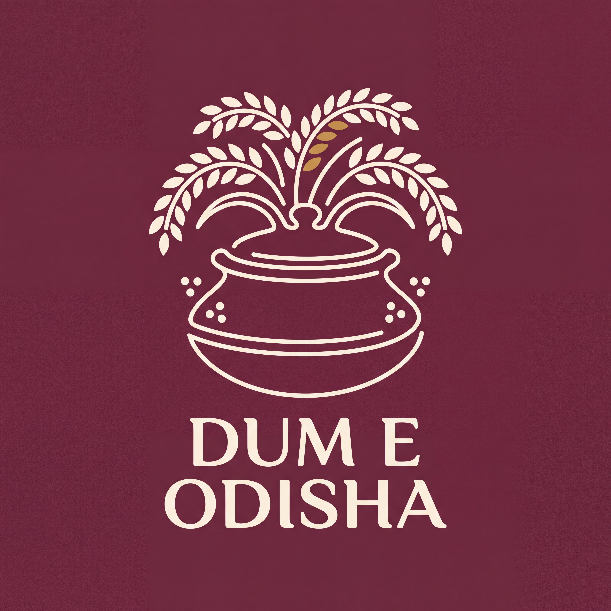
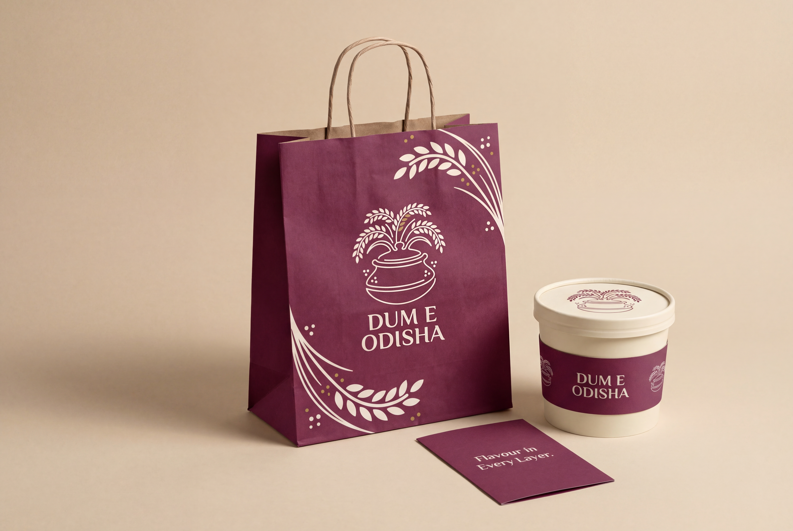

#6D2D3FPrimary background field
Jhoti Chita-inspired
New in revision 08

Rice becomes both the meal and a gesture of welcome around the cooking vessel.
Brand: Dum E Odisha
Tagline: Flavour in Every Layer.
Positioning: A welcoming biryani specialist, offering flavour and variety for everyday cravings and shared meals.
Rice-paste-like linework and paddy sprigs
Download this logo study
Flowing pale rice-paste-like lines, grain sprigs and sparse dot clusters on a rich solid field.
Download packaging mockup#6D2D3FPrimary background field
#FFF3DDPot, paddy linework and lettering
#C39451Small grain accents
HEX values are design targets. Generated raster tones vary; these are not ink separations or press specifications. Use this route’s palette together rather than mixing colours across the ten identities.
Soft, open capitals, with a restrained sans-serif information hierarchy. The logo is generated artwork, with no exact font match claimed. Do not retype it as a substitute for the supplied design.
Write Dum E Odisha consistently. Preserve the spaces around E and keep Odisha integral to the name. Biryani describes the offer outside the official logo.
Voice: warm, direct and appetite-led. “Find your favourite. Share a biryani.” Use Flavour in Every Layer. in larger layouts where it remains readable.
An original rice-line illustration inspired by Jhoti Chita; it does not reproduce a household worship arrangement.
Government of Odisha — Jhoti, Chita, Muruja · Research for the full collection
Full artwork at a reduced layout size. This is a viewing comparison, not a validated minimum-size claim.
Before production, prepare a clean vector master, a simple one-ink version and an appropriate small-format symbol. Check the real label or sign at its intended size.
Current deliverables are high-resolution raster concept studies with opaque backgrounds. No transparent master, print dieline or exact geometric certification is included.